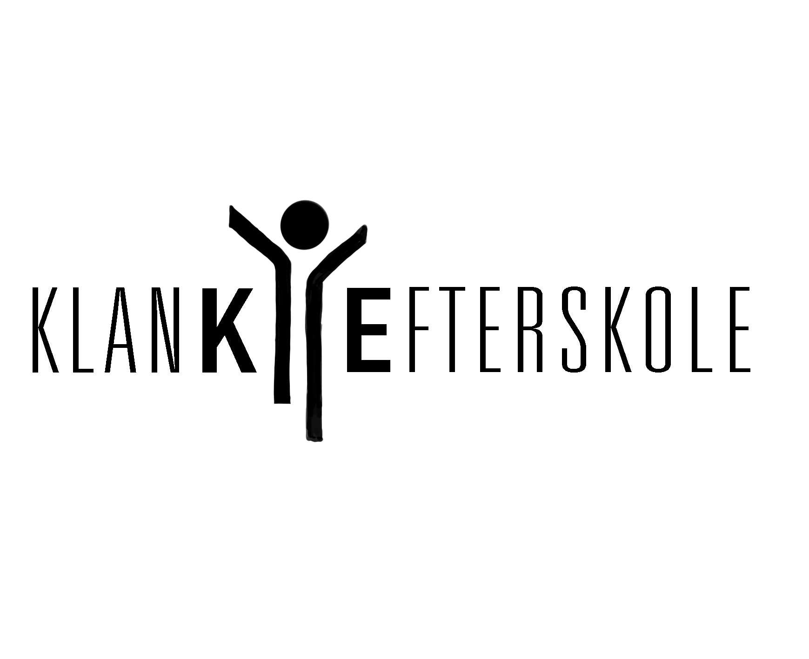

"Fællesskabet er en stor del af det at gå på Klank efterskole. Du møder jævnaldrende fra hele landet og kan få en masse nye venner.
Men fællesskabet kommer ikke af sig selv, du skal have vilje til at deltage og give noget af dig selv."
- Elev på Klank
Lærer på Adventure
"På Klank er er jeg så tæskeheldig, at undervise i adventure og have en masse aktive og fede valgfag, hvilket jeg elsker! Gennem undervisningen vil jeg gerne inspirere eleverne til at kunne tage kampen op iført en kæmpe ja-hat og opnå følelsen af at mestre."
- Signe Skovgaard-Hansen
Adventure Race
"Vi forventer ikke, at man er elitesportudøver for at kunne følge med. Det er dét, som er det fede ved netop vores efterskole, at det ikke er et krav. Det er trods alt mulighedernes efterskole."
"Vi forventer ikke, at man er elitesportudøver for at kunne følge med. Det er dét, som er det fede ved netop vores efterskole, at det ikke er et krav. Det er trods alt mulighedernes efterskole."

KOM PÅ KLANK OG OPLEV HVAD DET VIL SIGE AT GÅ PÅ EFTERSKOLE
Det er vores erfaring, at det altid er godt for begge parter at have mødt hinanden. Så får vi en mulighed for at tale med hinanden, og du og dine forældre kan danne jer et indtryk af det, der karakteriserer netop vores skole.
For at blive elev på skolen skal du først have besøgt eller haft en samtale på skolen sammen med dine forældre.
Hvis du får lyst til at besøge os eller tilmelde dig til Efterskolen, så tryk på nedenstående.